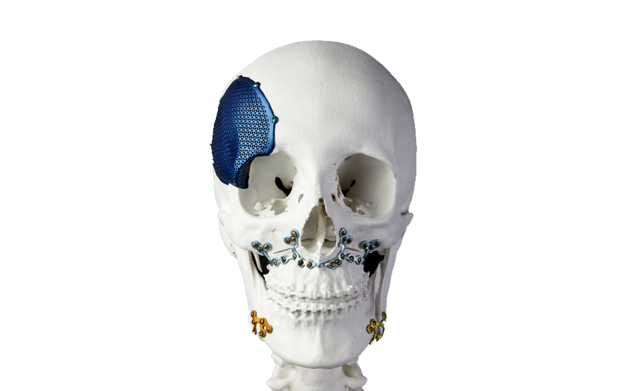

Contacto
¿Quieres saber más o colaborar conmigo? Contáctame:
- Email: Periciales.k9@gmail.com
- Teléfono: +52 669 154 5763
Sígueme en redes sociales


Expertos en Criminalística y Ciencias Forenses
Explora mi perfil profesional en criminalística y ciencias forenses, con enfoque en tecnologías como drones e inteligencia artificial.
Hola, soy Oscar Soto Espinoza. Cuento con experiencia en proyectos tecnológicos aplicados a ciencias forenses, como análisis digital, simulaciones y manejo de RPAS (drones).
Explora algunos de los lugares, eventos y proyectos en los que he participado:
¿Quieres saber más o colaborar conmigo? Contáctame: